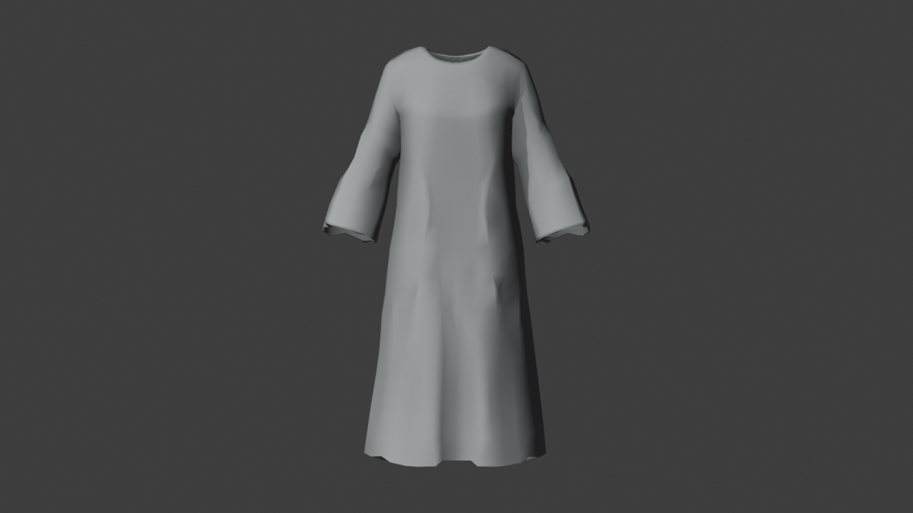
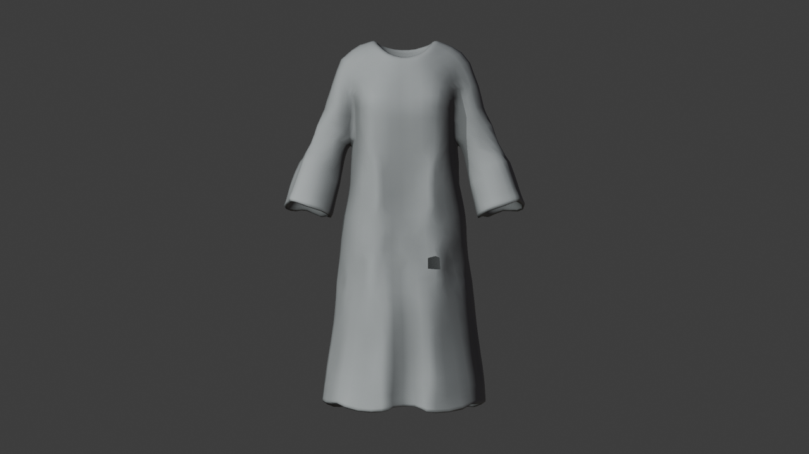
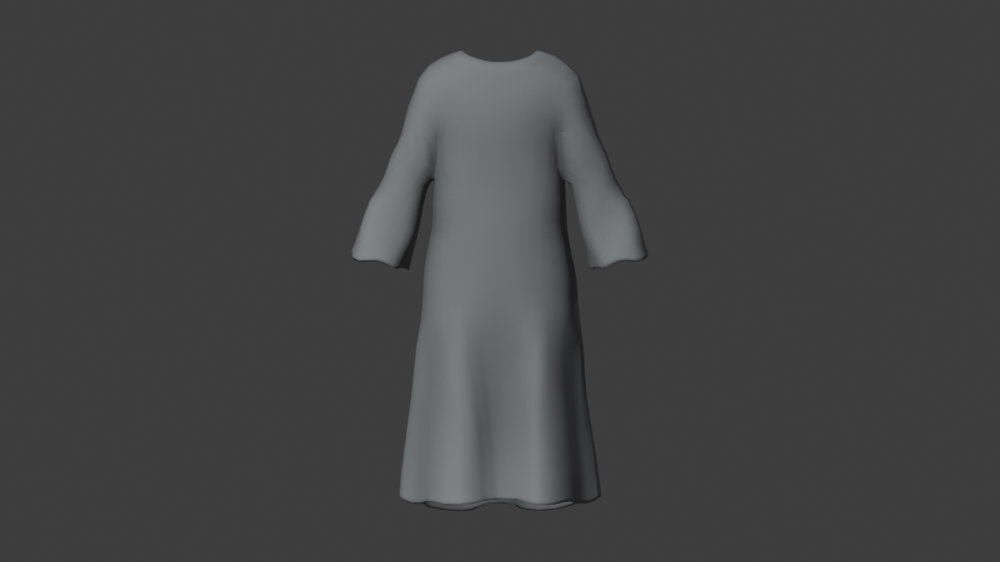
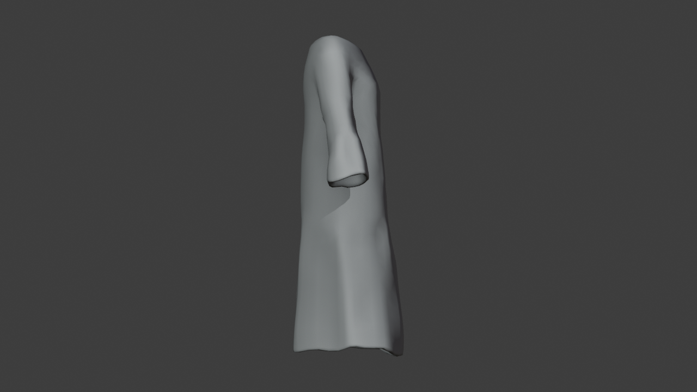
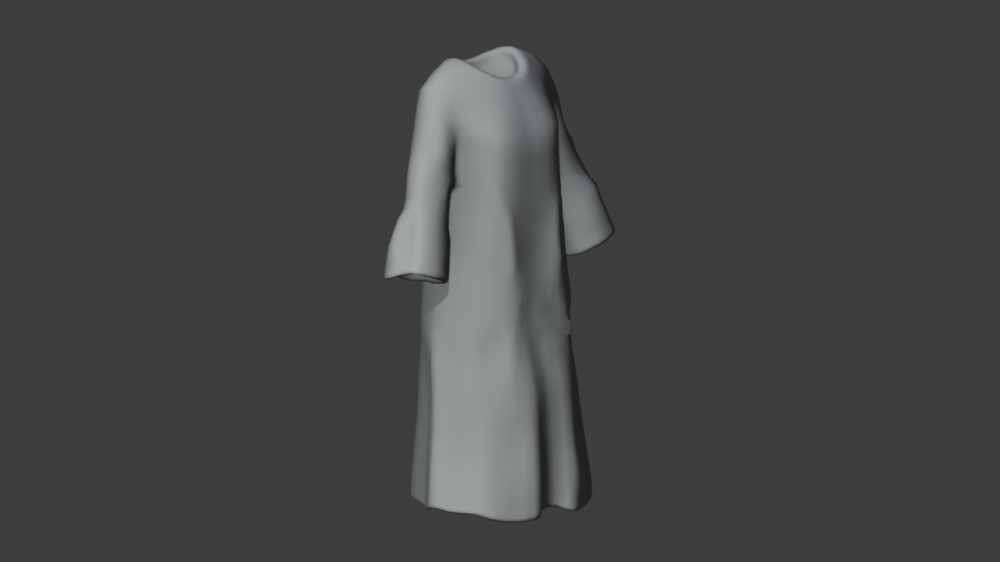
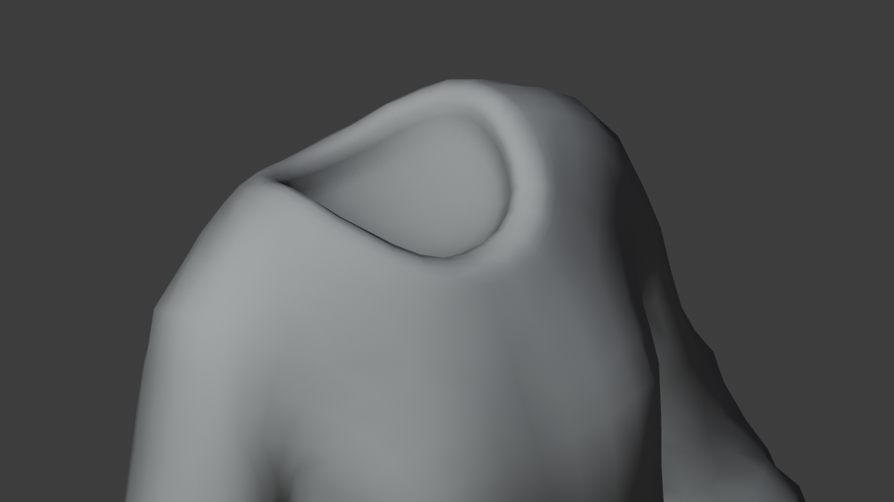
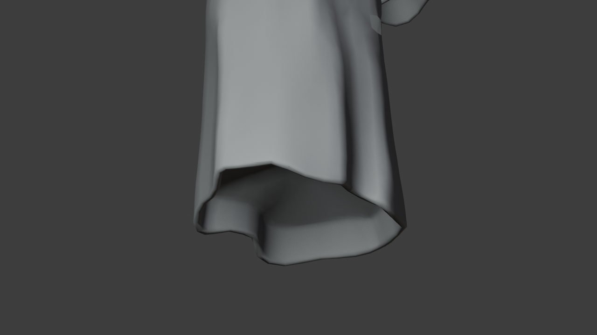
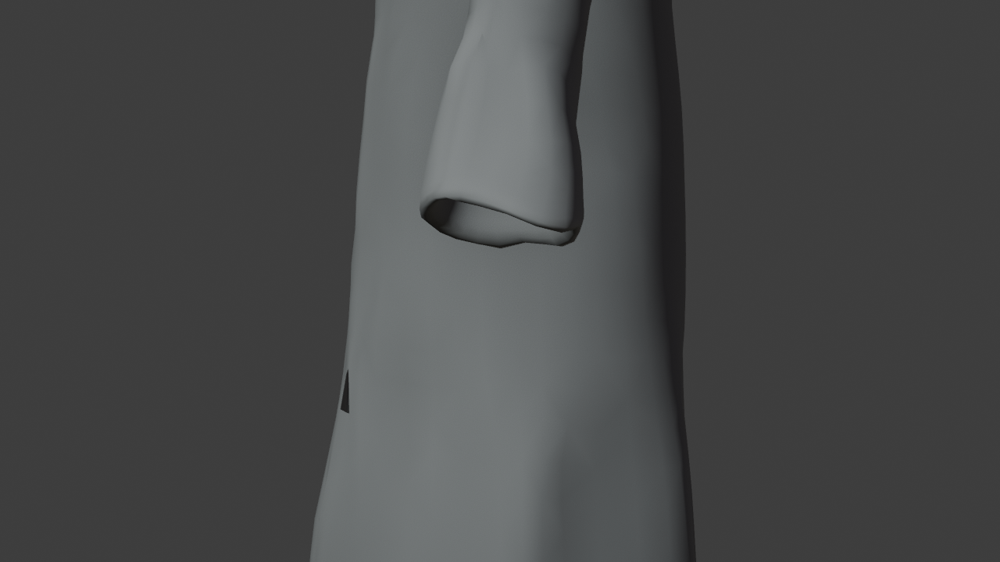
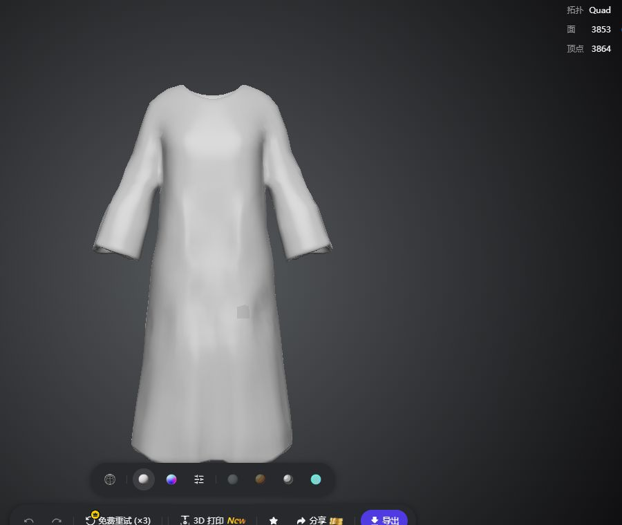

未采用／未绑定。外形保留，但有少量脱离碎片；领口和下摆存在内部封挡。重新生成没有直接得到合格衣物。身体v2、Room1与游戏角色保持不变。
检查说明 · Blender检查工程 · 原始检查记录
下面是实际Blender原始导入审图。旧版与新版独立按各自边界适配画幅，仅作轮廓参考，不是同尺寸误差对照。无修模、贴图、试穿或绑定。








Tripo网页原始结果：

下载原始文件和新检查工程均保留；不可把零自交或Quad标签当成可变形拓扑批准。